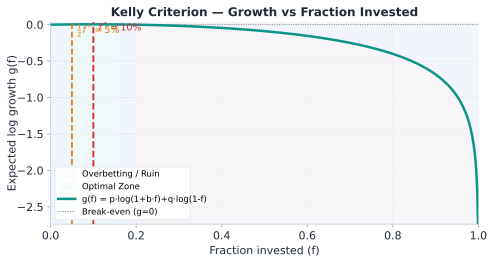
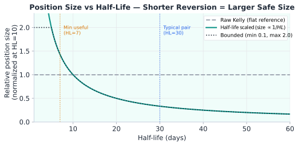

Statistical Arbitrage · บทที่ 12
Position Sizing:
Kelly criterion + half-life scaling + jump adjustment = position ที่ optimal
แก่นของบทนี้ — อ่านก่อน
Kelly criterion บอก fraction ของทุนที่ควรเสี่ยง เพื่อให้ long-run geometric growth สูงสุด แต่สำหรับ stat arb ต้องปรับด้วย half-life (ความเร็ว mean reversion) และ jump risk เพื่อให้ size เหมาะกับลักษณะ pair จริงๆ
$$f^* = \frac{p \cdot b - q}{b} \qquad \text{where}\; p=\text{win rate},\; b=\frac{\text{avg win}}{\text{avg loss}},\; q=1-p$$
⚠️ Full Kelly อันตราย: f* แบบ full (100%) ทำให้ drawdown สูงมากและไม่สมจริงในทางปฏิบัติ — สำหรับ stat arb ให้ใช้ ¼-Kelly เสมอ (f_actual = f* × 0.25) เพื่อลด variance และ drawdown ในกรณีที่ edge ประมาณผิด
12.1 Kelly Criterion พื้นฐาน
Kelly criterion มาจาก maximization ของ E[log(wealth)] สำหรับ gamble ที่มี edge:
สูตร Kelly สำหรับ Continuous Return
$$f^* = \frac{\mu}{\sigma^2} = \frac{\text{edge}}{\text{variance}}$$
μ = expected return ต่อ period (edge)σ² = variance ของ return ต่อ periodf* = fraction ของ capital ที่ควรลงทุน (0 ถึง 1)
ในรูปแบบ bet แบบ binary (win/lose) สูตรคือ f* = (p·b − q)/b = (p·b − (1−p))/b
ตัวอย่างตัวเลข: Kelly fraction
สมมติ spread มี edge = 0.6% per trade และ σ = 1.2% per trade:
f* = edge / σ² = 0.006 / (0.012)²
= 0.006 / 0.000144
= 41.67
→ f* คือ fraction ของทุนที่ Kelly แนะนำให้ลงทุน — ไม่ใช่ค่า leverage
→ f* = 41.67 (>> 1) เป็นค่าที่ไม่สมเหตุสมผล (สัญญาณว่า input ผิด — ดูหมายเหตุด้านล่าง)
→ ในทางปฏิบัติใช้ fractional Kelly: f_actual = f* × 0.25 (quarter Kelly)
→ f_actual = 41.67 × 0.25 ≈ 10.4 ซึ่งยังสูงเกินจริง
→ ต้องปรับด้วย half-life, jump discount และ drawdown limit ต่อไป
หมายเหตุ: f* > 1 คือสัญญาณเตือน input ผิด
ถ้าคำนวณแล้วได้ f* > 1 (เช่น 41.67) นั่นไม่ได้แปลว่าควรใช้ leverage 41 เท่า — แต่เป็น red flag ว่า μ และ σ ที่ใส่เข้าไปไม่ใช่ per-period strategy return จริง (edge 0.8% กับ vol 1.5% ต่อ trade ไม่ได้หมายความว่าควร bet 35 เท่าของทุน). f* ของ stat arb จริงหลังหัก cost อย่างซื่อสัตย์มักต่ำกว่า 1 มาก — ในทางปฏิบัติให้ใช้ drawdown-based sizing limit (§12.4) เป็นตัวกำหนดขนาดจริง
Kelly Fraction vs Edge/Variance — Parabola Curve

edge/σ²
f*
0
0.25
0.50
0.75
1.00
→ full Kelly
0
0.25
0.50
0.75
1.00
Full Kelly
Quarter Kelly
Half Kelly
zone เสี่ยง
over-betting
Quarter Kelly
edge=0.5, f*≈0.25
Kelly growth curve g(f) = p·log(1+b·f) + q·log(1−f): RED dashed = f* (optimal), AMBER = ½f* (Half-Kelly). GREEN zone = optimal region. RED zone = overbetting/ruin.
12.2 Half-life Scaling — ปรับขนาดตาม Mean Reversion Speed
ถ้า half-life ยาว (spread mean-revert ช้า) เราต้อง hold position นานกว่า ความเสี่ยงสะสมมากขึ้น — Kelly เดิมไม่ได้รวม factor นี้
Half-life Scaling Factor
$$\text{size\_adjusted} = f^* \times \min\!\left(1,\, \frac{\tau_{\text{target}}}{\tau_{\text{actual}}}\right)$$
target_halflife = half-life ที่เราออกแบบ strategy สำหรับ (เช่น 5 ชั่วโมง)actual_halflife = half-life จริงที่คำนวณได้จากข้อมูล
actual_halflife target_halflife scaling factor ผลกระทบ 3 ชั่วโมง 5 ชั่วโมง min(1, 5/3) = 1.0 ไม่ลด (fast mean reversion — ดี) 5 ชั่วโมง 5 ชั่วโมง min(1, 5/5) = 1.0 ไม่ลด (ตรงเป้า) 10 ชั่วโมง 5 ชั่วโมง min(1, 5/10) = 0.5 ลด size เหลือ 50% 24 ชั่วโมง 5 ชั่วโมง min(1, 5/24) ≈ 0.21 ลด size เหลือ 21% (slow — ระวัง)
สังเกตสำคัญ: Half-life เปลี่ยนตามเวลา
Half-life ของ Bybit↔Lighter spread อาจสั้นกว่าช่วง sideways market (1-2h) และยาวขึ้นในช่วง trending market (8-12h) — ต้องคำนวณ half-life ใหม่ทุก N ชั่วโมง ไม่ใช่ fix ไว้ตลอด
12.3 Jump-adjusted Kelly
ในตลาด crypto มี jump risk สูง: ราคาอาจกระโดดข้ามคืนหรือช่วง liquidation cascade ค่าพยากรณ์ E[log(1+f·R)] ลดลงอย่างมากเมื่อมี jump — Kelly สูตรปกติ assume normal returns ซึ่งไม่ถูกต้อง
Jump-adjusted Kelly
$$f^*_{\text{adj}} = f^* \times \delta_{\text{jump}}, \quad \delta_{\text{jump}} = e^{-\lambda \cdot J^2 / \sigma^2}$$
δ_jump = e^{−λJ²/σ²} คือ SDE-based approximation (λ = jump intensity, J = avg jump size)jump_discount = 1 − P(jump) × (expected_loss_given_jump / max_tolerable_loss)หมายเหตุ: ทั้งสองสูตรให้ผลเดียวกันในเชิง monotonic (jump มาก → discount ต่ำ) — ใช้สูตรที่คำนวณได้จากข้อมูลที่มี
ทำไม Jump ถึงทำลาย Kelly?
สมมติ Kelly บอก f* = 0.5 (ลง 50% ของทุน) แต่มี 1% chance ที่ spread จะกระโดด 5σ ในพริบตา:
ขาดทุน = 0.5 × capital × 5 × σ_spread
ถ้า σ_spread = 2% และ capital = $100,000
ขาดทุน = 0.5 × $100,000 × 5 × 0.02 = $5,000 จากเหตุการณ์ 1 ครั้ง
ถ้าลด f* ด้วย jump_discount = 0.8:
f*_adj = 0.5 × 0.8 = 0.4
ขาดทุน = 0.4 × $100,000 × 5 × 0.02 = $4,000 (ดีขึ้น 20%)
12.4 Max Drawdown Constraint
นอกจาก Kelly และ half-life scaling แล้ว ต้องตั้ง hard limit จาก max drawdown ที่ยอมรับได้:
Max Drawdown Position Limit
$$\text{size}_{\text{DD}} = \frac{\text{max\_loss}}{z_{\text{entry}} \cdot \sigma_{\varepsilon}}$$
max_loss = capital × max_dd fraction (เช่น 2% ของ capital)entry_z = z-score ณ จุดเข้า tradeσ_spread = volatility ของ spread
ตัวอย่าง: Max Drawdown เป็น Binding Constraint
Kelly บอก $80,000 แต่ drawdown limit บอก $45,000 → ใช้ $45,000
12.5 Pseudo-code: compute_position_size()
def compute_position_size(
capital, edge, sigma, halflife, entry_z,
target_halflife=5, jump_discount=0.8, max_dd=0.02
):
# Step 1: Kelly fraction
kelly_f = edge / (sigma ** 2)
# Step 2: Half-life scaling (ลดถ้า mean reversion ช้า)
hl_scale = min(1.0, target_halflife / halflife)
# Step 3: Jump discount (ลดความเสี่ยง tail event)
jump_scale = jump_discount
# Step 4: Max drawdown constraint (hard limit)
dd_limit = (capital * max_dd) / (entry_z * sigma)
# Step 5: รวมทุก factor (ใช้ ¼-Kelly เพื่อลด leverage)
fractional_kelly = 0.25
raw_size = capital * (fractional_kelly * kelly_f) * hl_scale * jump_scale
# Step 6: ใช้ขนาดที่น้อยกว่า (conservative)
return min(raw_size, dd_limit)
หมายเหตุเกี่ยวกับ sigma ใน dd_limit
ตัวหาร entry_z * sigma ใน dd_limit มาจากสมมติว่า worst-case adverse move คือ spread เคลื่อนจาก z ณ จุดเข้า (entry_z) กลับไปที่ค่ากลาง — ระยะที่ spread วิ่งสวน position ได้จึง scale ตาม entry_z โดยตรง ยิ่ง entry ที่ z สูง position ยิ่งต้องเล็กลง ถ้าต้องการ conservative มากขึ้นให้บวก buffer เข้ากับ entry_z ตาม risk appetite
12.6 Running Example: Bybit↔Lighter BTC Perp
Running Example: คำนวณขนาด Position ทีละขั้น
สถานการณ์: ระบบเพิ่ง transition ไป MANUAL_GO — ต้องคำนวณขนาด order ก่อนส่ง
Parameter ค่า ที่มา capital $100,000 กำหนดโดย risk manager edge (μ) 0.8% = 0.008 historical P&L per trade sigma (σ) 1.5% = 0.015 std ของ spread returns (30d) halflife 4 ชั่วโมง OU model calibration target_halflife 5 ชั่วโมง ออกแบบ strategy สำหรับ 5h jump_discount 0.80 low-vol regime max_dd 2% = 0.02 risk limit entry_z 2.0 z-score ณ จุดเข้า trade (ใช้ใน dd_limit)
การคำนวณทีละขั้น
Step 1: Kelly fraction
kelly_f = edge / sigma²
= 0.008 / (0.015)²
= 0.008 / 0.000225
= 35.56 ← f* >> 1: input ไม่ใช่ return จริง ต้องปรับ
Step 2: Half-life scaling
hl_scale = min(1.0, 5 / 4)
= min(1.0, 1.25)
= 1.0 ← actual (4h) เร็วกว่า target (5h) → ไม่ลด
Step 3: Jump discount
jump_scale = 0.80
Step 4: Max drawdown limit
dd_limit = (100,000 × 0.02) / (2 × 0.015)
= 2,000 / 0.03
= $66,667
Step 5: Raw size
raw_size = 100,000 × 35.56 × 1.0 × 0.80
= $2,844,800 ← สูงกว่า dd_limit มาก!
Step 6: Final size = min($2,844,800, $66,667) = $66,667
ผลลัพธ์และการตีความ
Position size สุดท้าย: $66,667 (ถูก cap โดย drawdown limit)
Kelly บอก $2.8M แต่นั่นคือ theoretical optimum ภายใต้ assumptions ที่ unrealistic
Drawdown limit เป็น binding constraint — ในทางปฏิบัติ max_dd มักเป็น primary constraint
ทั้งสองขา: Long Lighter ≈ $66,667 | Short Bybit ≈ $66,667 × β
Sensitivity Analysis: ผลของ Half-life ที่ต่างกัน

halflife (h)
size ($k)
1
3
5
7
10
15
20h
0
20k
40k
60k
dd_limit $66.7k
target=5h
full size
(cap)
size ลดตาม halflife ยาวขึ้น
Position size ∝ 1/half-life — pairs ที่ revert เร็ว (HL ต่ำ) ได้ size ใหญ่กว่า; bounded เพื่อป้องกัน concentration. AMBER vertical = min useful HL=7d, BLUE = typical pair HL=30d.
บนโต๊ะจริง — Kelly Sizing ใน Production
ใช้ Half-Kelly (f = f*/2) เป็น default: Full Kelly ถูกในทางทฤษฎีแต่สมมติว่ารู้ p และ b แม่นยำ — estimation error ทำให้ full Kelly overbets ในทางปฏิบัติเสมอRe-compute Kelly รายวัน จาก 30-day win rate และ average win/loss; อย่า lock parameters ไว้นานCap position ที่ 5% NAV ต่อ pair โดยไม่คำนึงถึง Kelly output — concentration risk สำคัญกว่า theoretical optimalityEmergency halving: ถ้า drawdown > 3× Kelly-predicted → ลด size ทันทีครึ่งหนึ่ง อย่า restore จนกว่า drawdown recover กลับมา
คณิตที่พัง — เมื่อ Kelly พัง
Kelly assumes i.i.d. trades: spread trades มี serial correlation (consecutive losses ในช่วง regime shift) — Kelly มาตรฐานจะ underestimate ruin probability 2–5× ในช่วง Stressed regimeb estimate จาก backtest: ถ้า backtest overestimate b (เช่น ลืมรวม slippage หรือมี lookahead bias) Kelly จะ prescribe fraction ที่ใหญ่เกินความเป็นจริงอย่างอันตรายHalf-life scaling ไม่ scale กับ correlation: pairs ที่ correlated สูง (เช่น BTC pair หลายตัว) size รวมอาจเกิน Kelly แม้แต่ละ pair อยู่ในขีดจำกัด — ต้องคำนวณ portfolio-level Kelly ด้วย
12.7 แบบฝึกหัด
โจทย์ 12.1 — คำนวณ Kelly Size
Pair ใหม่มี edge = 1.2% per trade, σ = 2.0% per tradeถาม: คำนวณ position size ทีละขั้น และระบุว่า constraint ไหนเป็น binding?
ดูคำตอบ
Step 1: kelly_f = 0.012 / (0.02)² = 0.012 / 0.0004 = 30.0
Step 2: hl_scale = min(1.0, 5/8) = min(1.0, 0.625) = 0.625
Step 3: jump_scale = 0.75
Step 4: dd_limit = (50,000 × 0.03) / (2 × 0.02) = 1,500 / 0.04 = $37,500
Step 5: raw_size = 50,000 × 30.0 × 0.625 × 0.75 = $703,125
Step 6: Final size = min($703,125, $37,500) = $37,500
Binding constraint: Max drawdown limit ($37,500) — Kelly raw size สูงกว่า 18 เท่า
โจทย์ 12.2 — เปรียบเทียบ Two Pairs
เปรียบเทียบสอง pair ด้วย capital = $200,000 เดียวกัน:
Pair A: edge=0.5%, σ=0.8%, halflife=3h, jump_discount=0.9, max_dd=2%
Pair B: edge=1.5%, σ=3.0%, halflife=12h, jump_discount=0.65, max_dd=2%
ถาม: คำนวณ final size ของแต่ละ pair และอธิบายว่า pair ไหน "ดีกว่า" ในแง่ risk-adjusted
ดูคำตอบ
Pair A:
kelly_f = 0.005 / (0.008)² = 78.1 | hl_scale = min(1, 5/3) = 1.0 | dd_limit = (200k×0.02)/(2×0.008) = $250,000
raw_size = 200k × 78.1 × 1.0 × 0.9 = $14,058,000 → final = min($14M, $250k) = $250,000
Pair B:
kelly_f = 0.015 / (0.03)² = 16.7 | hl_scale = min(1, 5/12) = 0.417 | dd_limit = (200k×0.02)/(2×0.03) = $66,667
raw_size = 200k × 16.7 × 0.417 × 0.65 = $905,000 → final = min($905k, $66.7k) = $66,667
Pair A ดีกว่า: ทั้ง edge/σ ratio (Sharpe-like) สูงกว่า และ max size ที่ dd_limit อนุญาตสูงกว่า Pair B มาก เนื่องจาก σ ต่ำกว่า
โจทย์ 12.3 — Dynamic Sizing เมื่อ Regime เปลี่ยน
ระหว่าง hold position อยู่ ระบบตรวจพบ volatility regime เปลี่ยนจาก low-vol เป็น high-vol:ถาม: ควรทำอะไรกับ position ที่ถืออยู่?
ดูคำตอบ
คำนวณ new dd_limit:
new_dd_limit = (100,000 × 0.02) / (2 × 0.025) = 2,000 / 0.05 = $40,000
Current position ($80,000) > new_dd_limit ($40,000) → ต้อง reduce size
Action: ลด position จาก $80,000 ไปที่ $40,000 (ลดครึ่งหนึ่ง)
ทำได้โดย: ปิดครึ่งหนึ่งของแต่ละขา (ปิด $40,000 ของ short Bybit และ $40,000 ของ long Lighter)
หมายเหตุ: ในทางปฏิบัติควรมี "position reduction" state ใน state machine เพื่อ handle กรณีนี้ ไม่ใช่ปิดทั้งหมดทันที
Ch.12 Position Sizing | ต่อไป → Ch.13: Perpetual Basis Strategy
🏛️ ห้องสมุด Options & Arbitrage Statistical Arbitrage — เริ่มต้น